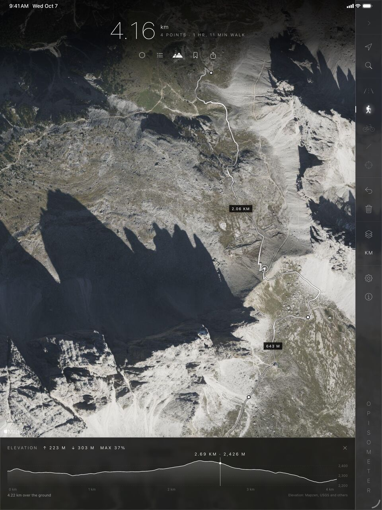
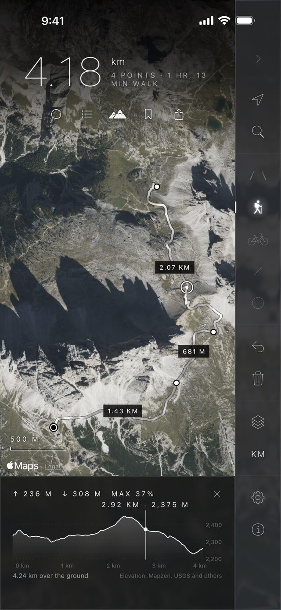
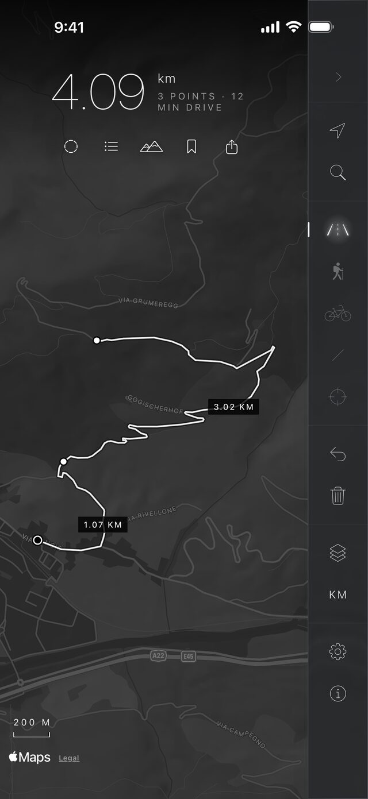
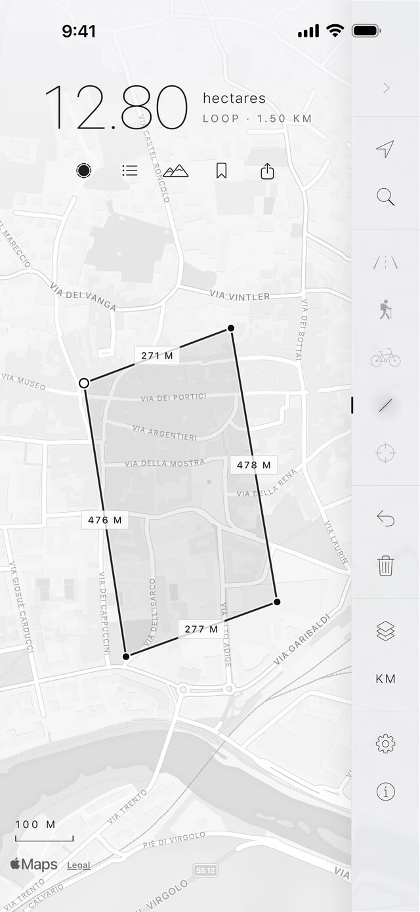
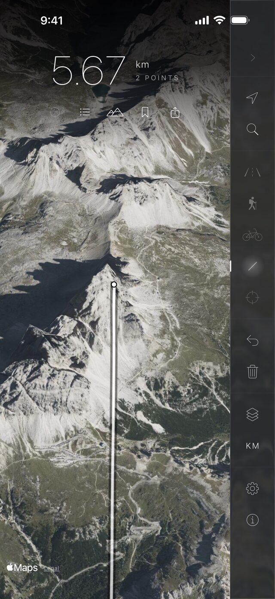
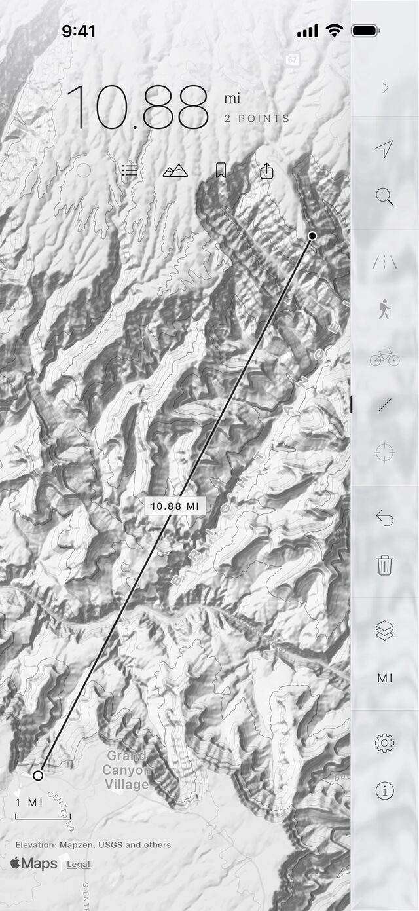
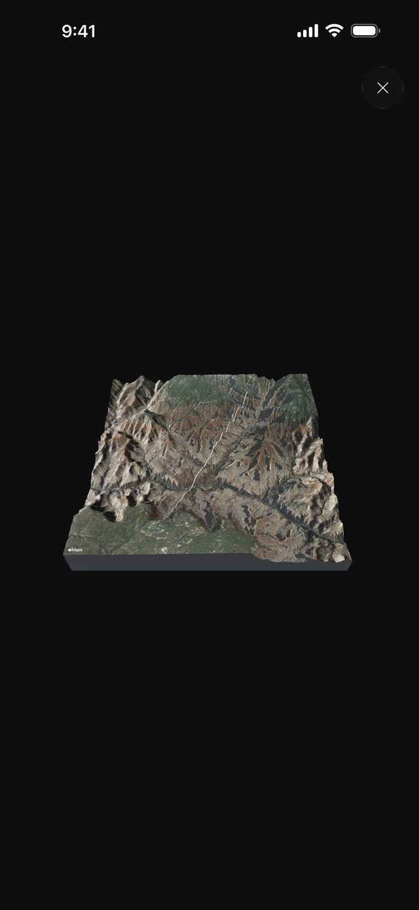
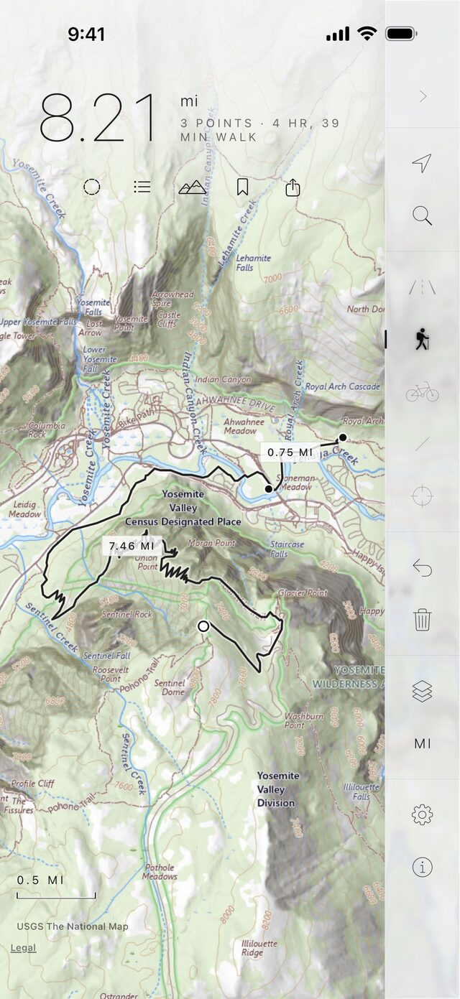
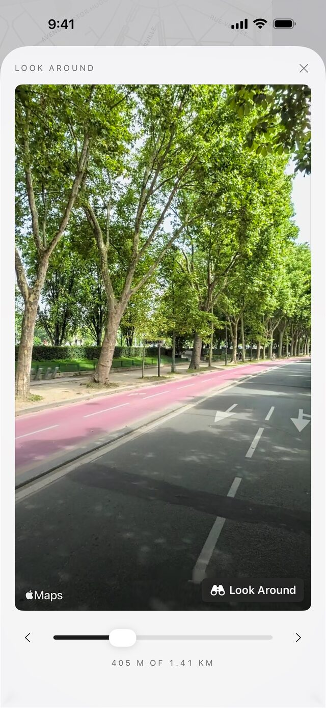

iPhone · iPad · iOS 26.5 or later
Measure the world from the map.
Measure distance and area on Apple Maps, along roads, trails and bike routes, for iPhone and iPad.
Touch and hold to drop points and watch the distance add up, or go straight as the crow flies. Close a loop for the area inside, record a route as you go, and see every climb and descent.

02 // About Opisometer
The little wheel, reinvented for Apple Maps.
An opisometer is the little wheel once rolled along a paper map to measure a route. This one measures on Apple Maps.
Maps, search and routes come from Apple's MapKit. Heights come from the AWS Terrain Tiles and are worked out on your device. Topographic maps of the US come from the U.S. Geological Survey.
What it does
- Measures along roads, trails and bike routes, or in straight lines
- Closes a loop to find the area inside
- Records a route as you walk, run or ride
- Shows every climb and descent, and the steepest grade
- Draws shaded relief and contour lines anywhere, and topographic maps across the US
- Looks out from any point in 3D, or raises the ground into a model for your table
- Saves and compares measurements, and shares them as a picture, a video or a GPX file
- Counts in kilometers, miles or furlongs
Elevation and 3D

Three Peaks of Lavaredo: 236 m up, 308 m down, and a steepest grade of 37%.
Heights worked out on your device
03 // Screenshots
On iPhone and iPad
Select a screenshot to see it larger.
iPhone
8 screens · iOS 26.5 or later-
01Bolzano

Along the road 4.09 km by car, three points - 02Tre Cime di Lavaredo Every climb 236 m up, steepest grade 37%
-
03Bolzano

Area 12.80 ha inside a 1.50 km loop -
04Tre Cime di Lavaredo

The view from here 5.67 km over 3D terrain -
05Grand Canyon

Relief and contours 10.88 mi, rim to rim -
06Grand Canyon

3D model The ground, raised for your table -
07Yosemite Valley

Topo maps 8.21 mi on the USGS map -
08Paris

Look Around Walk the route at street level


04 // Platforms & languages
Supported platforms
- iPhoneiOS 26.5 or later
- iPadiPadOS 26.5 or later, with keyboard shortcuts
- Widgets, Control Center and SiriA Last Measurement widget, Control Center buttons and Siri phrases
- No account, no ads, no trackingYour measurements stay on your device
Language
- English
Opisometer is in English. Numbers are written the way your region writes them, so in Germany a distance reads 4,09 km.